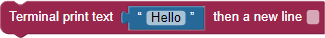
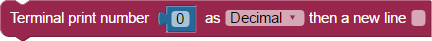
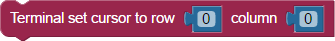

BlocklyProp reference for TERMINAL blocks


 Available for all board types.
Available for all board types.
The TERMINAL blocks are used for displaying text on your computer screen, using BlocklyProp's built-in Terminal. The Terminal will open automatically when you run a project that uses these blocks.
WARNING! The Terminal blocks can only be used from your main program. These blocks will not work if used inside function blocks that are then launched with the new processor block.
Terminal print text

The Terminal print text block is used to send text to the terminal window. When checked, the "then a new line” checkbox adds a carriage return to the end of the text that was sent, moving the cursor to the beginning of the next line in the terminal. (Note: earlier versions of this block omitted the quotation marks around the text string.)
Terminal print number

The Terminal print number block sends the inserted value to the terminal window. Set the dropdown menu to display the number as a decimal, hexadecimal, or binary number. The “then a new line” checkbox, when checked, adds a carriage return to the end of the number that was sent, moving the cursor to the beginning of the next line in the terminal.
Terminal print multiple

The Terminal print multiple block can print several terms of different types on a single line. When checked, the "then a new line” checkbox adds a carriage return to the end of the text that was sent, moving the cursor to the beginning of the next line in the terminal.
Click the gear icon to drag additional terms into the list. Checking the "specify digits" box adds an optional field to all numeric values. Then attach appropriate values to the block, and optionally specify how many digits to display for each numerical value. Options are:
- text
- decimal number
- hexadecimal number
- binary number
- floating point number
- ASCII character
Floating point number option
BlocklyProp uses integer numbers. The floating point number option allows an integer value to be displayed as a decimal number. Use its drop-down menu to divide the integer by a multiple of 10 to scale and display the number appropriately.
For example, the A/D read block provides values in volt-hundredths. Use the floating point number option with divide by 100 to display the value in volts as a decimal number:


Terminal receive text
The Terminal receive text block stores any characters typed into the terminal into the variable item chosen in the dropdown menu. The characters entered, even if they are numbers, are stored as a string. This block will continue to collect up to 128 characters until the user presses the enter key (sends a carriage return character). Program execution will pause until the carriage return character is received.
Terminal receive number
The Terminal receive number block stores numerical characters typed into the terminal into the variable item chosen in the dropdown. The number entered is stored as an integer. This block will continue to collect numerical characters until the user presses the enter key (sends a carriage return character). Program execution will pause until the carriage return character is received.
Terminal new line
The Terminal new line block sends a single carriage return character to the terminal, moving the cursor to the beginning of the next line.
Terminal clear screen
The Terminal clear screen block sends a special character to the screen, which causes the terminal to clear and reset the cursor to the top left (0,0) position.
Terminal set cursor

The Terminal set cursor block positions the cursor in the window.
- First, use a Terminal clear screen block, which also places the cursor in the top-left 0, 0 position.
- Insert a number value to the desired row.
- Insert a number value to the desired column, 0 to 255.